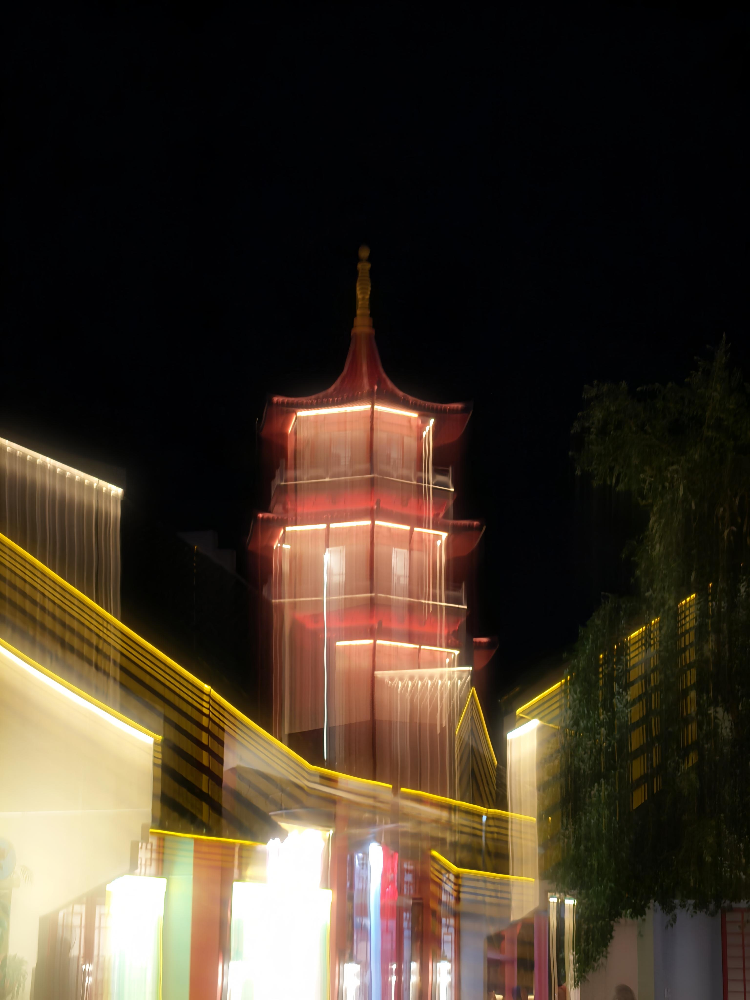

LensRift
Every Frame Reveals a Hidden Soul

Every Frame Reveals a Hidden Soul
LensRift started as nothing more than a hobby—a personal project that grew from my curiosity and love for photography a couple of years ago. At the time, I simply wanted a creative outlet where I could capture the little moments that often go unnoticed. What began as occasional photo walks with my camera slowly turned into something much more meaningful. Every photograph became a memory, every frame a lesson, and every outing an opportunity to see the world from a different perspective.
As I continued exploring photography, I realized it was never just about taking beautiful pictures. It became a way for me to tell stories without using words. Through LensRift, I learned to appreciate different perspectives, experiment with light and composition, and express emotions through every image I captured. Photography became more than a hobby—it became a passion that continues to inspire me every day.

The name LensRift represents the idea that every camera lens offers a unique perspective—a "rift" or opening into a different way of seeing the world. I created LensRift as a place where I could document my journey, improve my craft, and share moments that resonate with others. Each photograph reflects not only the subject in front of the camera but also my own experiences, thoughts, and growth as a photographer.

Over time, I realized that photography becomes even more meaningful when it is shared. Every image has a story behind it—whether it's the excitement of discovering a new place, the beauty of everyday life, or a fleeting moment that might otherwise be forgotten. Through LensRift, I want to invite you to experience those stories alongside me. My goal is not only to showcase photographs but also to share the memories, emotions, and experiences that gave life to each frame.